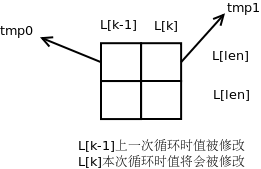

LCS
题目
长度分别为m和n的字符串A和B，确定二者的最长公共子序列(LCS, Longest Common Subsequence)的长度。 串和序列的区别： 串是字符构成的连续的有先后顺序的队列。 序列是可能不连续的有先后顺序的字符串。
分析
最笨的方法是蛮力搜索。 用动态规划方法。 动态规划步骤：
- 分析抽象，得出递归式。
- 分析子问题个数：多项式级，可以用动态规划来解；指数级，不能用动态规划来解。
- 采用自底向上的分析求子问题的最优解。
A和B的LCS长度的递推式：
- L[i][j] = 0, if i=0 or j=0(此时A和/或B为空串)
- L[i][j] = L[i-1][j-1]+1, if i>0 and j>0 and A[i]=B[j]
- L[i][j] = max(L[i][j-1], L[i-1][j]), if i>0 and j>0 and A[i]!=B[j]
PS:LCS可能不唯一。
LCS
Input:字符串A和B，长度分别为m和n。 Output:A和B的LCS的长度
for (i = 0; i <= m; i++) // 置第0行为0
L[i][0] = 0;
for (j = 0; j <= n; j++) // 置第0列为0
L[0][j] = 0;
for (i = 1; i <= m; i++)
for (j = 1; j <= n; j++)
{
if (A[i-1] == B[j-1])
L[i][j] = L[i-1][j-1] + 1;
else
L[i][j] = L[i][j-1] > L[i-1][j] ? L[i][j-1] : L[i-1][j];
}
return L[m][n];
时间复杂度O(m*n)，空间复杂度O(m*n)。
LCS-1
把空间复杂度降为O(min(m,n))。 
m = A.length();
n = B.length();
len = m<n ? m+1 : n+1;
int L[len];
for (i = 0; i < m; i++)
{
k = 1;
// 每次外层循环之前，置tmp0为数组L首元素的值
tmp0 = L[0];
for (j = 0; j < n; j++)
{
tmp1 = L[k]; // 保存即将被改变的L[k]
if (A[i] == B[j])
{
L[k] = tmp0 + 1;
}
else
{
L[k] = L[k-1] > L[k] ? L[k-1] : L[k];
}
tmp0 =tmp1; // 保存原L[k]供L[k+1]使用
k++;
}
}
LCS-2
- 输出LCS。